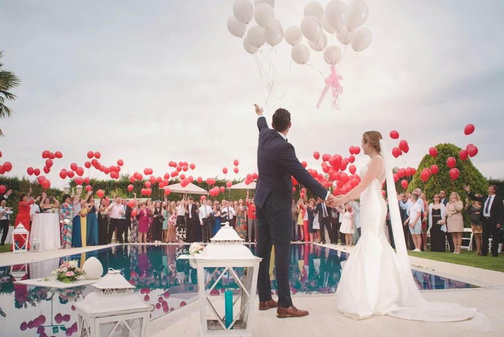

01 / PERNIKAHAN
💍 INISIAL MONOGRAM KUSTOM
Pernikahan & Lamaran
Bikin pesta pernikahan kamu penuh tawa dan berkesan seumur hidup! Tamu pulang membawa souvenir foto strip cantik berhias nama & inisial pengantin. Tersedia opsi meja buku tamu (guestbook).
bisa senada dengan desain undanganmu! ♡